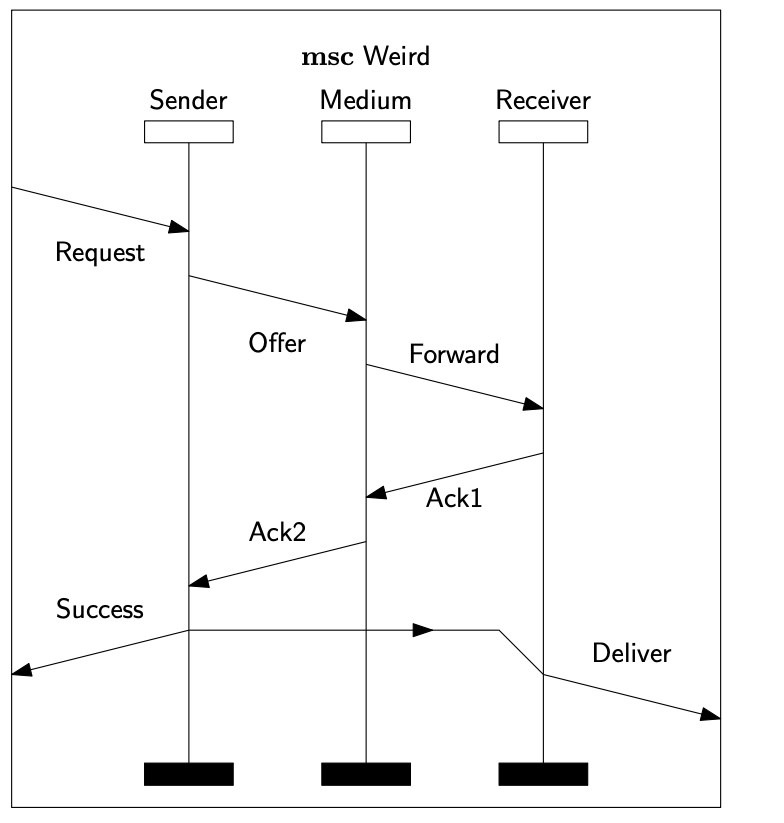
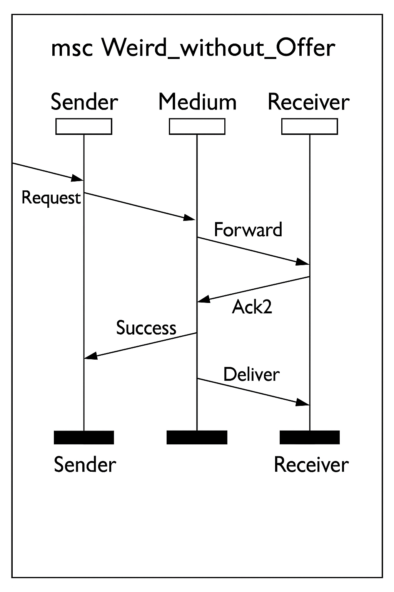
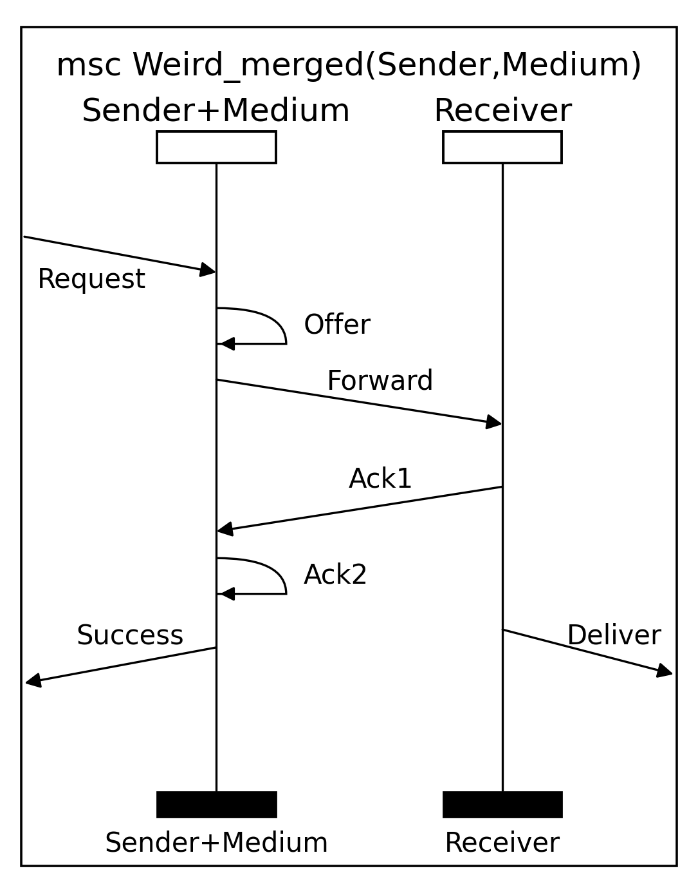

Experiments / GPT-5.4-Thinking Deep / Example 9.docx
Hi, please consider this picture from a Message Sequence Chart. Please identify the events in this diagram.

Thanks for sharing the Message Sequence Chart (MSC). I will identify the events visible in the diagram in a precise MSC sense (i.e., send and receive events on each lifeline, ordered top to bottom).
Overall structure
MSC name: msc Weird
Instances (lifelines):
Sender
Medium
Receiver
Time flows from top to bottom along each lifeline.
Each message gives rise to two events:
a send event on the source lifeline
a receive event on the destination lifeline
Events by message (top to bottom)
1. Request
Send(Request) on Sender
Receive(Request) on Sender
⚠️ This is unusual: the arrow originates outside the Sender and points into the Sender lifeline. So the Sender receives a Request from an unspecified environment.
2. Offer
Send(Offer) on Sender
Receive(Offer) on Medium
3. Forward
Send(Forward) on Medium
Receive(Forward) on Receiver
4. Ack1
Send(Ack1) on Receiver
Receive(Ack1) on Medium
5. Ack2
Send(Ack2) on Medium
Receive(Ack2) on Sender
6. Success
Send(Success) on Sender
Receive(Success) outside the Sender lifeline (to the environment)
Again, this is an interaction with the environment rather than another instance.
7. Deliver
This message is visually non‑standard (bent arrow), but semantically:
Send(Deliver) on Medium
Receive(Deliver) on Receiver
Events grouped by lifeline
Sender lifeline
Receive(Request)
Send(Offer)
Receive(Ack2)
Send(Success)
Medium lifeline
Receive(Offer)
Send(Forward)
Receive(Ack1)
Send(Ack2)
Send(Deliver)
Receiver lifeline
Receive(Forward)
Send(Ack1)
Receive(Deliver)
Notable “weird” aspects (consistent with the title)
Messages interacting with the environment (Request, Success)
Non-horizontal message arrows
A bent message (Deliver)
Asymmetric acknowledgment pattern (Ack1, Ack2)
Possible ambiguity in causal ordering across lifelines
If you like, I can:
Formalize this as a partial order of events
Translate it into MSC semantics (traces / pomsets)
Discuss well-formedness or realizability issues
Map it to process algebra / automata
Question:
What is the correct ordering between sending Offer and sending Deliver?
The correct ordering is:
send(Offer) < send(Deliver)
That is, sending Offer occurs before sending Deliver.
Why?
In the MSC, send(Offer) is on the Sender lifeline higher up than the event where Deliver is sent. Since time flows downwards on each lifeline, the vertical order gives:
Sender:
send(Offer)
...
send(Deliver)
So the local ordering on the Sender lifeline implies:
s_Offer before s_Deliver
Even if one reasons causally through the intermediate messages, the same conclusion follows:
send(Offer)
< receive(Offer)
< send(Forward)
< receive(Forward)
...
< send(Deliver)
``
So the required ordering is:
s(Offer) < s(Deliver)
Question:
What is the correct ordering between sending Success and sending Deliver?
Answer:
The correct ordering is:
send(Success) || send(Deliver)
That is, sending Success and sending Deliver are unordered / concurrent in the MSC partial order.
Assuming Deliver is sent by the Receiver to the environment, the relevant causal constraints are:
send(Ack1) < receive(Ack1) < send(Ack2) < receive(Ack2) < send(Success)
and, independently on the Receiver lifeline:
send(Ack1) < send(Deliver)
But there is no causal path from:
send(Success)
to:
send(Deliver)
or vice versa.
So the MSC does not imply either of these:
send(Success) < send(Deliver)
send(Deliver) < send(Success)
The correct relationship is therefore:
send(Success) and send(Deliver) are unordered.
Question:
Based on the diagram above, generate a message sequence chart in which message Offer is abstracted away. Please produce the resulting MSC after abstracting from Offer.
Below is the resulting MSC after abstracting away the message Offer, i.e. removing both:
send(Offer) at Sender
receive(Offer) at Medium
All other messages/events are retained, and the remaining ordering constraints are inherited from the original MSC.
msc Weird_without_Offer
Sender Medium Receiver
| | |
|<----- Request -------|? | from environment
| | |
| |------ Forward ------->|
| | |
| |<------- Ack1 ---------|
| | |
|<------- Ack2 --------| |
| | |
|------ Success ------>|? | to environment
| | |
| | |------ Deliver -----> environment
| | |
More explicitly, the remaining messages are:
Request : environment -> Sender
Forward : Medium -> Receiver
Ack1 : Receiver -> Medium
Ack2 : Medium -> Sender
Success : Sender -> environment
Deliver : Receiver -> environment
The corresponding remaining events are:
Sender:
receive(Request)
receive(Ack2)
send(Success)
Medium:
send(Forward)
receive(Ack1)
send(Ack2)
Receiver:
receive(Forward)
send(Ack1)
send(Deliver)
So the Offer abstraction removes the causal link:
send(Offer) < receive(Offer)
and, importantly, removes the direct visible connection from Sender to Medium.
After abstraction, Forward becomes the first visible event on the Medium lifeline.
Please draw the image of the MSC.

Question:
Consider the original MSC given below. Merge instances Sender and Medium; produce the message sequence chart after merging. Please draw the resulting MSC.
Answer:
Here is the resulting MSC after merging Sender and Medium into a single instance Sender+Medium.
I have kept Offer and Ack2 as internal/self messages on the merged instance, since they were originally messages between the two instances that have now been merged.

Question:
What is the order between sending Success and sending Deliver in the abstracted MSC?
Answer:
In the MSC abstracted from Offer, the ordering between:
send(Success)
send(Deliver)
is still:
send(Success) || send(Deliver)
That is, they are unordered / concurrent.
Abstracting away Offer removes the two events:
send(Offer)
receive(Offer)
but it does not introduce a new causal dependency between send(Success) and send(Deliver).
So neither of the following is implied:
send(Success) < send(Deliver)
send(Deliver) < send(Success)
The correct relation is therefore:
send(Success) and send(Deliver) are incomparable in the partial order.
A drawing may place one visually higher than the other, but unless they are ordered on the same lifeline or connected by a causal chain, that vertical placement does not create a semantic ordering.
Question:
Consider the original MSC given below. Please produce the set of all of its traces.
Assuming a trace means a linearization of the MSC partial order, the original MSC has the following ordering constraints.
Let the message-level events be:
Request, Offer, Forward, Ack1, Ack2, Success, Deliver
The causal order is:
Request < Offer < Forward < Ack1 < Ack2 < Success
Ack1 < Deliver
There is no order between Deliver and Ack2, Success, except that Deliver must occur after Ack1.
Therefore the set of all message-level traces is:
{
Request · Offer · Forward · Ack1 · Deliver · Ack2 · Success,
Request · Offer · Forward · Ack1 · Ack2 · Deliver · Success,
Request · Offer · Forward · Ack1 · Ack2 · Success · Deliver
}
So there are exactly 3 traces.
If written at the send/receive event level, using:
s_X = send X
r_X = receive X
and considering only events on the three MSC instances, the common chain is:
r_Request < s_Offer < r_Offer < s_Forward < r_Forward < s_Ack1
< r_Ack1 < s_Ack2 < r_Ack2 < s_Success
``
with:
s_Ack1 < s_Deliver
and s_Deliver unordered with r_Ack1, s_Ack2, r_Ack2, and s_Success.
Hence the event-level traces are:
{
r_Request · s_Offer · r_Offer · s_Forward · r_Forward · s_Ack1 ·
s_Deliver · r_Ack1 · s_Ack2 · r_Ack2 · s_Success,
r_Request · s_Offer · r_Offer · s_Forward · r_Forward · s_Ack1 ·
r_Ack1 · s_Deliver · s_Ack2 · r_Ack2 · s_Success,
r_Request · s_Offer · r_Offer · s_Forward · r_Forward · s_Ack1 ·
r_Ack1 · s_Ack2 · s_Deliver · r_Ack2 · s_Success,
r_Request · s_Offer · r_Offer · s_Forward · r_Forward · s_Ack1 ·
r_Ack1 · s_Ack2 · r_Ack2 · s_Deliver · s_Success,
r_Request · s_Offer · r_Offer · s_Forward · r_Forward · s_Ack1 ·
r_Ack1 · s_Ack2 · r_Ack2 · s_Success · s_Deliver
}
So at the instance-event level, there are 5 traces.
Please draw a labelled transition system that has the same traces as the MSC. Please produce one static picture, no interactive visualisation.
Here is a static labelled transition system whose accepted traces are exactly the message-level traces of the MSC:

The branching after Ack1 captures the fact that Deliver is unordered with the later Ack2/Success part, giving exactly these three traces:
Request · Offer · Forward · Ack1 · Deliver · Ack2 · Success
Request · Offer · Forward · Ack1 · Ack2 · Deliver · Success
Request · Offer · Forward · Ack1 · Ack2 · Success · Deliver